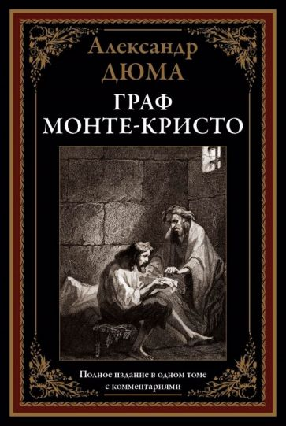

А. Дюма "Граф Монте-Кристо"
Описание книги

Аннотация:
Донос завистника — и невинный Эдмон оказывается за решёткой на долгих четырнадцать лет... Пройдя через каменные мешки замка Иф, закалив волю,
разбогатев на пиратских кладах, герой под псевдонимом «Граф Монте-Кристо» возвращается во Францию, чтобы отомстить предателям, сломавшем ему жизнь.
О книге:
«Граф Мо́нте-Кри́сто» (фр. Le Comte de Monte-Cristo) — приключенческий роман Александра Дюма, классика французской литературы, написанный в 1844—1846 годах.
Рецензия:
Дюма обязателен к прочтению в определенном возрасте, во времена подросткового запойного чтения. Именно тогда, просто и красочно написанные романы великого беллетриста о том, что волнует молодые умы необходимы для формирования юной личности. Современному подростку может показаться не слишком "круто" или динамично, но романтически настроенные личности, обязательно оценят,"Графа Монте-Кристо" особенно. Главный герой романа стал персонажем мифологизированным, персонажем знаковым, на него существует множество отсылок в более поздней литературе, в кино, да просто персонаж перешел в разряд нарицательных. Эдмон Дантес и тема мести и справедливости.Прочитанный в юности роман и его персонажи могут остаться с вами на всю жизнь.
- Возрастной рейтинг: 8+
- Год выпуска: 1846 год
- Общие отзывы: Очень положительные